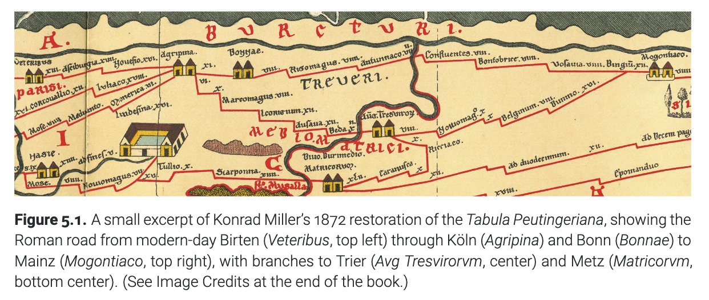
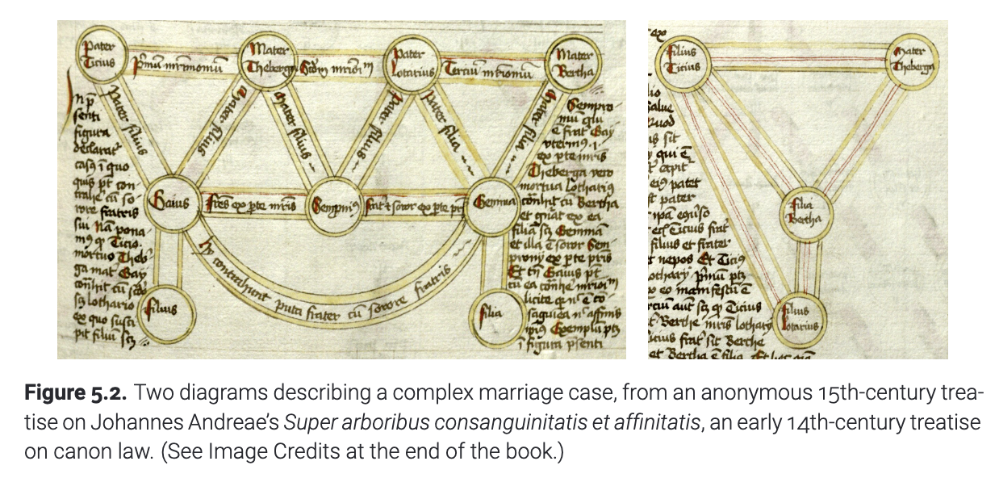
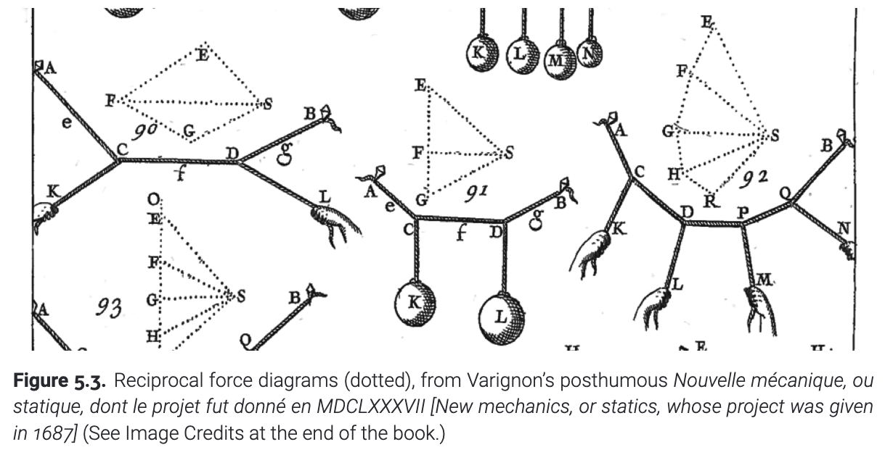

$$ \huge 第五章 ~~基本图论算法 $$
一个图可以看做有序对$(a,b)$的集合. 这个有序对的元素的类型可以基本是任意的 -- 比如整数的有序对$(1,2)$, 城市的有序对$(郑州, 武汉)$, 星星的有序对$(太阳, 月亮)$, 论文的有序对$('\text{Attention is all you need}', '\text{A Mathematical Theory of Communication}')$, 网页的有序对$(baidu.com", google.com'')$, 一个游戏状态的有序对, 递归问题的有序对, 甚至图本身的有序对! 我们要是希望对于图进行可视化的话, 一个常见的方法是: 对于那些底层的元素(比如上面的$1,2$; $太阳, 月亮$) 我们把它称为节点(vertices)或者顶点(nodes). 那些有序对$(1,2)$我们称为一条边(edges)或者一个弧(arcs). 但事实上, 这些底层对象和有序对可以包含任何东西.
图最早的例子之一是绘制地图. 在罗马帝国的鼎盛时期, 罗马工程师建造了一个横跨欧洲、西亚和中亚以及北非的道路, 这些道路超过了400000公里。路上的旅行者会携带一些清单. 这些清单是要怎么走的指引, 有的甚至附上了路上的地标和距离的图像. 《普汀格尔地图》(Tabula Peutingeriana)是一卷13世纪的卷轴，展示了整个罗马公共行程。人们普遍认为它是一份中世纪的复制品，据信是在奥古斯都凯撒统治时期委托制作的第五世纪修订版的第一世纪旅行路线图。这个地图虽不是按照比例尺精确绘制的(历史学家争论它是否有资格作为“地图”!), 但是它将道路用连线表示出来, 就像今天的地铁地图一样. 每条道路沿线的城市由代表该道路的曲线中的拐点表示, 地图上还标出了这些城市的名称以及它们之间的距离. 因此，该地图包含足够的信息来找到5世纪的时候罗马帝国任意两个城市之间的最短路线. 如下图.

(图5.1 康拉德·米勒对普汀格尔地图的部分修复展示了从现代比尔滕（Veteribus，左上方）经科隆（Agripina）和波恩（Bonnae）到美因茨（Mogontiaco，右上方）的罗马道路，还有通往特里尔（Avg Tresvirorvm，中央）和梅斯（Matricorvm，底部中央）的支线。（参见书末的图片来源。）)
图的最早应用之一 -- 特别是树 -- 在表示家谱方面特别有用. 几个世纪以来，复杂的家谱一直被用来解决有关婚姻、继承和王室继承的所有权问题. 比如, 罗马帝国的民法禁止堂兄弟姐妹或近亲之间的婚姻. 这个规定后来被早期天主教会采纳为教规法. 九世纪初，教会改变了所需的家族之间关系的远近的计算方法: 罗马法中的计算要求最近共同祖先的距离总和至少为四(简称距离至少为4)，而较新的教会法则要求两者距离的最大值至少为七。1215年, 出于更加实际的考虑，教会将允许结婚所需的最小距离放宽至4. (注: 在11至12世纪期间，这种限制逐渐增强，包括多大四层亲缘关系，最初通过婚姻，后来又包括婚外性行为、许诺婚姻，甚至是教父母关系。例如, 一般禁止男人与他姐姐的丈夫的姐姐的丈夫的姐姐结婚，同样禁止鳏夫与他儿子的妻子的鳏夫母亲结婚。这些亲缘关系的要求在1215年得到显著减少，但并未完全消除；教会直到1917年才放弃了非法性行为亲缘关系的概念。) 图5.2的左边展示了一个非常复杂的情况: Tirius和Theburga结婚, 在Tirius去世后, Theburga才生有一子Gaius. 紧接着, Theburga与Lothar结婚, 并给他生了一个儿子. 不幸的是, Theburga之后去世. 最后, Lothar和Bertha结婚, 并且有一个女儿Gemma. 那么问题是, Gaius的儿子可以合法地与Gemma的女儿结婚吗?

(图5.2 源自一份匿名的十世纪论文，关于约翰内斯·安德烈的《论血缘与亲缘树》（Super arboribus consanguinitatis et affinitatis），这是一份早期的关于教会法的十二世纪论文。（请参见书末的图片来源。）)
在16世纪末, 法国数学家Pierre Varignon为了找到多个力下一股绳子的平衡状态, 改进了在一个世纪前Simon Stevin发明的画图方法. 他发现, 当绳子达到平衡的时候, 就可以就着受力状态画出一个特殊的图 -- 这个图的边与绳子平行, 边的长度与受力的大小成比例, 在绳子互相接触的地方, 图边构成一个环. 在他去世两年后, 这个方法才被详细地发表了出来. 在今天, 这些图叫做受力分析图. 一个更洋气一点的名字是Maxwell-Cremona图(James Clerk Maxwell, Luigi Cremona 与 Carl Culmann和其他人一起). 他们在18世纪末, 把这一主题丰富了更多的内容.

(图5.3 受力分析图(相互作用图, 用虚线表示), 摘自Varignon去世后的Nouvelle mécanique, ou statique, dont le projet fut donné en MDCLXXXVII(新力学或静力学, 1687年的项目))
当然, 有很多的关于图的其他例子: 比如自古以来的棋牌游戏、古希腊的哲学家研究过的多面体的顶点和边; 公元7世纪, 东亚人研究的星座可视化; 9世纪和10世纪由al-Adli, Rudrat. a, al-Suli等人提出的象棋问题 -- 马的周游路线; Giovanni Fontana在大约1420年提出的迷宫; 1533年Gemma Frisius提出的大地三角测量法(这个方法在1615年被Willebrod Snell用于计算地球的周长; 在1799年被用来定义1米的长度); 1735年Leonhard Euler知名的"七桥问题"的部分解法; 电话和其他的通信网络(首先在1753年提出, 在18世纪初被Ronalds, Schilling, Gauss推广; 并于18世纪后期在全球范围内部署); 电路的分析(在18世纪初由Ohm, Maxwell, Kirchho等人确立); 分子结构式(在1857年8月和1858年由August Kekulé和Archibald Couper独立提出); 社交网络(在19世纪30年代由社会学家Jacob Moreno首次研究); 数字电子电路(在1886年由Charles Sanders Peirce提出, 并在1937年由Claude Shannon铸成了现代形式), 也就是现代互联网的起源 -- 如果你硬要说的话.
“图”这个词是由 James Sylvester 在1878年创造的, 用于表述抽象的数学概念. 在他的同事William Cliord的建议下, "图"最开始用于表述代数不变量(就像Kekulé的分子式描述的是一个分子特有的结构一样). 尽管树的概念已经被Gustav Kirchho和Karl von Staudt在10年前用过了, Arthur Cayley还是在1857年用"树"这个词表示联通的无环图. 最早的关于图论的书籍 -- The zeroth book on graph theory在1926年由André Sainte-Laguë出版. 十年后, Dénes Knig 发表了"第一本"图论相关的著作.